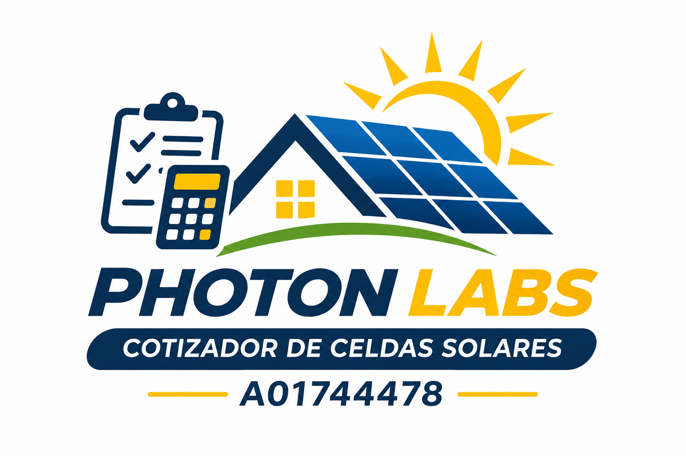

Análisis eléctrico
Estimación de potencia, energía consumida y necesidades del sistema.
Explora cómo la luz se transforma en electricidad y conecta la ciencia con nuestras mediciones reales de una celda solar.

Una herramienta académica en desarrollo para ayudar a comprender el consumo energético, seleccionar componentes solares y estimar costos y ahorros.
Estimación de potencia, energía consumida y necesidades del sistema.
Dimensionamiento de paneles y revisión de compatibilidad entre equipos.
Inversión estimada, ahorro potencial y periodo de recuperación.
Registra los equipos y su consumo eléctrico.
Calcula paneles, inversor y almacenamiento.
Consulta costos, ahorro y un reporte técnico.
Modifica la intensidad de la luz y la carga para observar qué cambia en una celda solar. Compara el modelo con las mediciones de nuestra práctica.
Abrir simulador